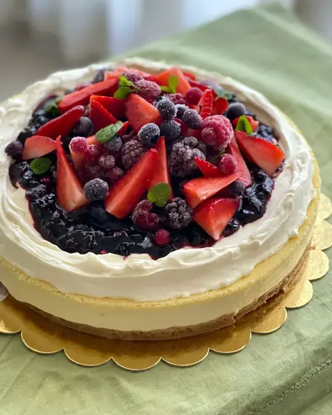
Referencia: el cheesecake de la casa.Cheesecake de dulce de leche Falta
Composición A. Archivo: cheesecake-dulce-de-leche · python herramientas/preparar_foto.py cheesecake-dulce-de-leche.png cheesecake-dulce-de-leche
SENTIDA · para TRAMA
Para generar con GPT las fotos de la tienda que faltan o que no combinan con el resto. Cada ficha trae la foto real de referencia, el prompt listo y el nombre con el que tiene que volver.
cheesecake-dulce-de-leche.png.sentida-site/, corré python herramientas/preparar_foto.py <archivo> <nombre> y después python herramientas/generar_tienda.py./tortas/ o /antojos/, y revisá que no tenga texto, logos ni sellos inventados.A · tienda
B · tienda
C · Decoradas
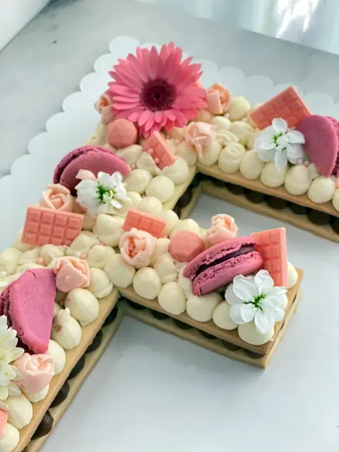
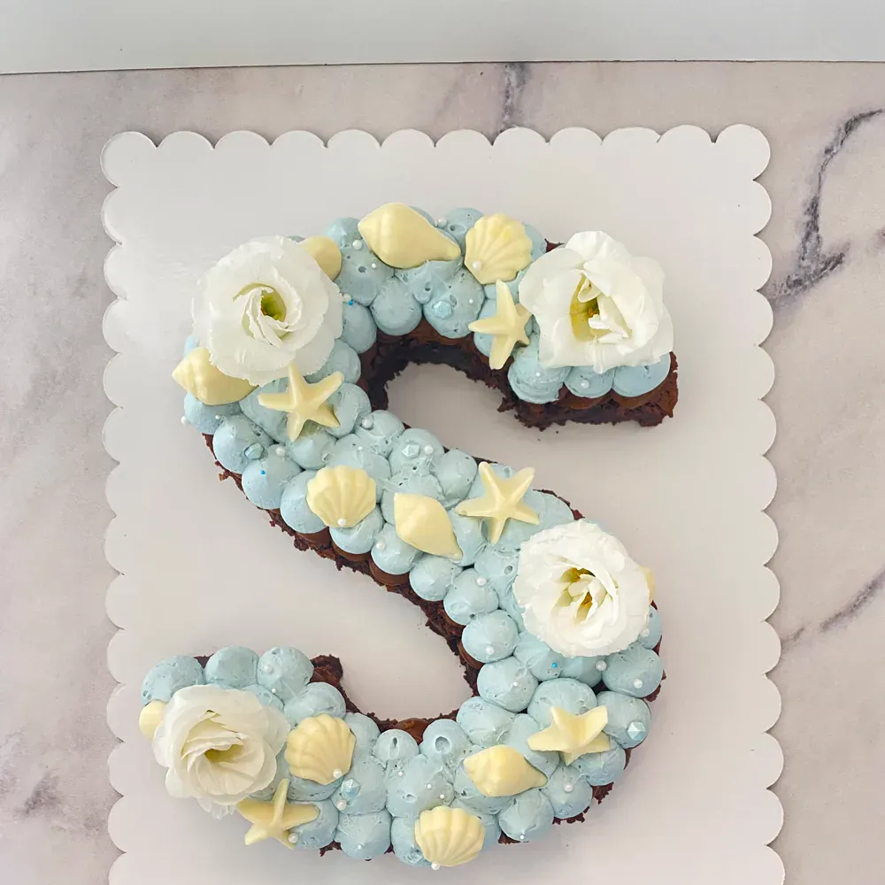
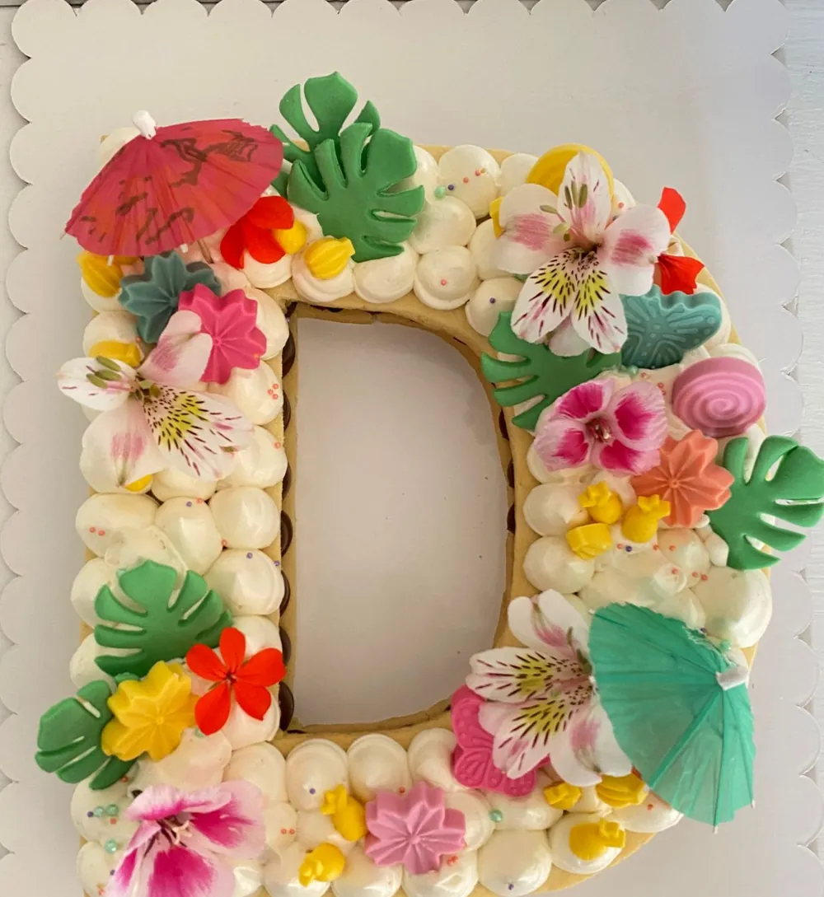

Referencia: el cheesecake de la casa.Composición A. Archivo: cheesecake-dulce-de-leche · python herramientas/preparar_foto.py cheesecake-dulce-de-leche.png cheesecake-dulce-de-leche
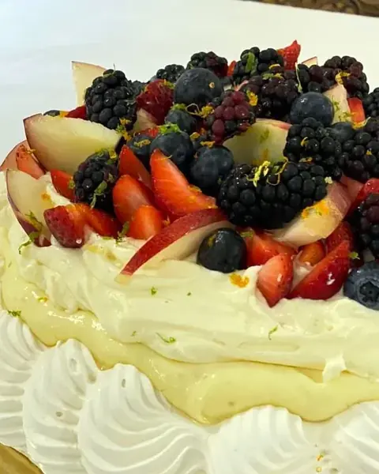
Referencia: la pavlova de lima.Composición A. Archivo: pavlova-dulce-de-leche · python herramientas/preparar_foto.py pavlova-dulce-de-leche.png pavlova-dulce-de-leche
 Referencia: el glasé de las galletas corazón.
Referencia: el glasé de las galletas corazón.Composición B. Archivo: galletas-decoradas · python herramientas/preparar_foto.py galletas-decoradas.png galletas-decoradas
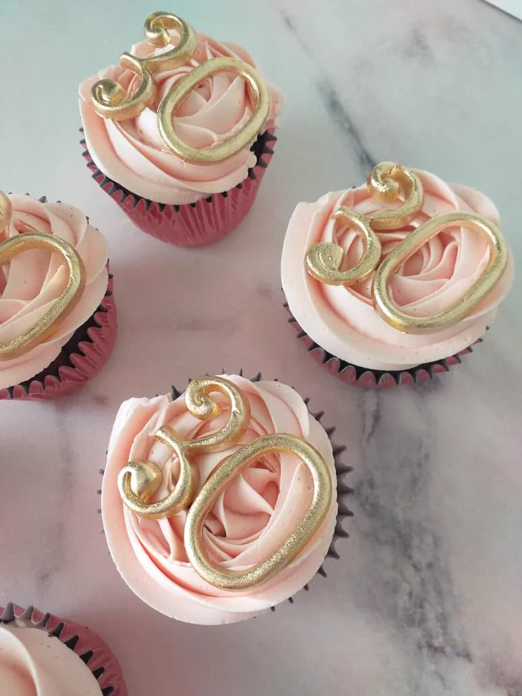
Referencia: los cupcakes de la casa.Composición B. Archivo: cupcakes-tematicos · python herramientas/preparar_foto.py cupcakes-tematicos.png cupcakes-tematicos
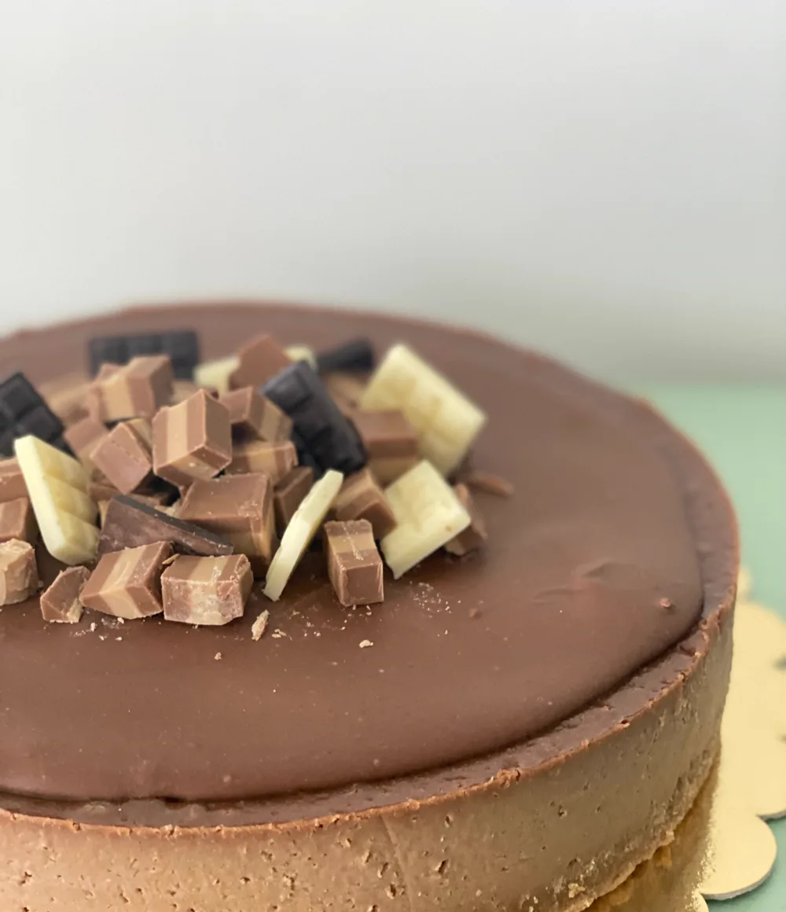
Referencia: la foto actual.Composición A. Archivo: cheesecake-marroc · python herramientas/preparar_foto.py cheesecake-marroc.png cheesecake-marroc
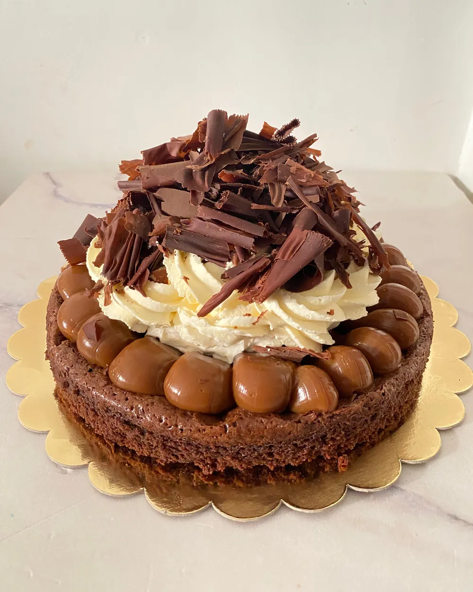
Referencia: la foto actual.Composición A. Archivo: brownie-chantilly · python herramientas/preparar_foto.py brownie-chantilly.png brownie-chantilly
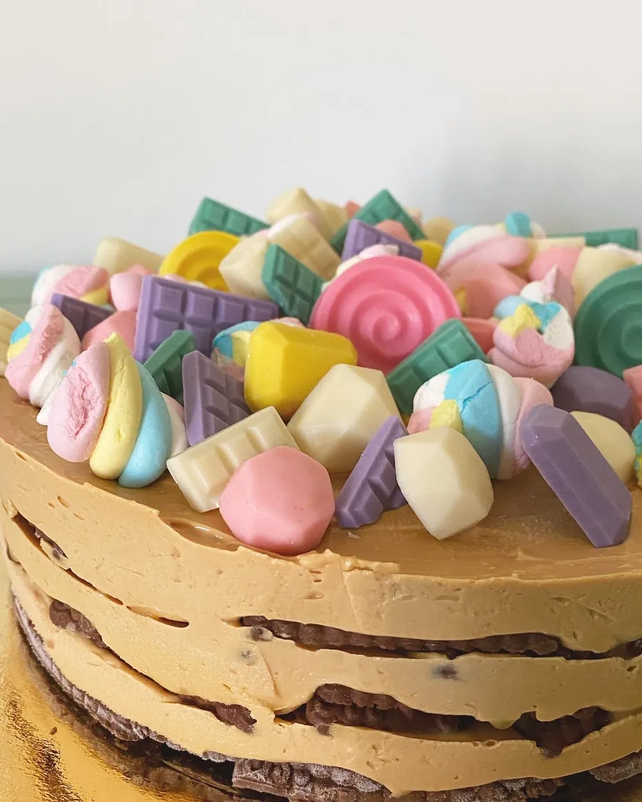
Referencia: la foto actual.Composición A. Archivo: chocotorta · python herramientas/preparar_foto.py chocotorta.png chocotorta
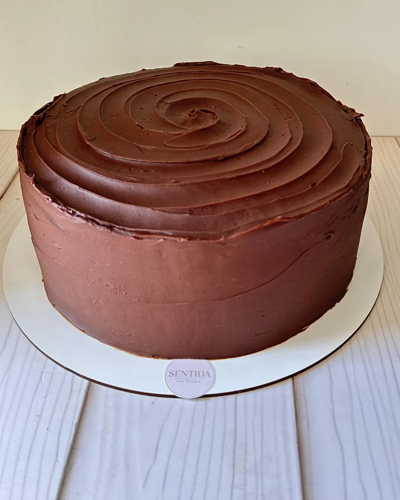
Referencia: la foto actual.Composición A. Archivo: torta-matilda · python herramientas/preparar_foto.py torta-matilda.png torta-matilda
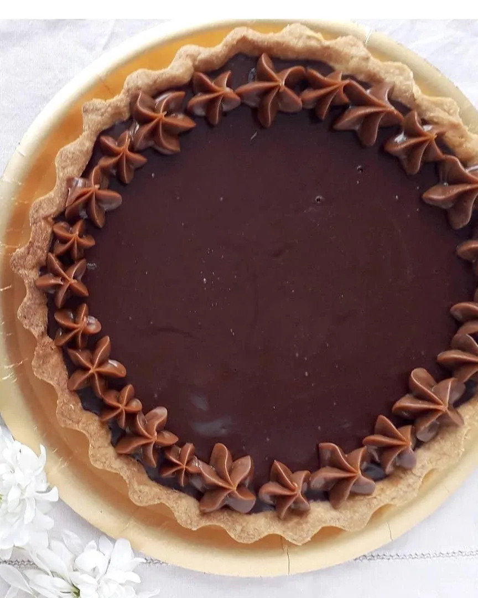
Referencia: la foto actual.Composición A. Archivo: torta-havannet · python herramientas/preparar_foto.py torta-havannet.png torta-havannet
Composición B. Archivo: cupcakes-decorados · python herramientas/preparar_foto.py cupcakes-decorados.png cupcakes-decorados
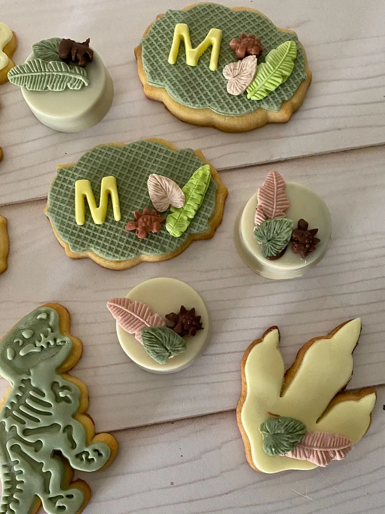
Referencia: la foto actual.Composición B. Archivo: galletas-tematicas · python herramientas/preparar_foto.py galletas-tematicas.png galletas-tematicas
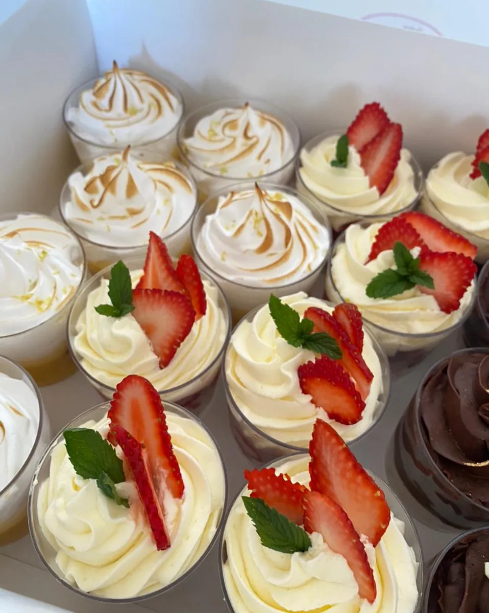
Referencia: la foto actual.Composición B. Archivo: chupitos · python herramientas/preparar_foto.py chupitos.png chupitos